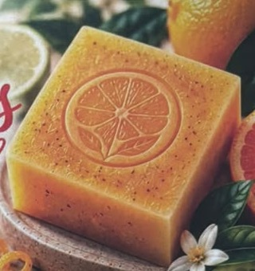
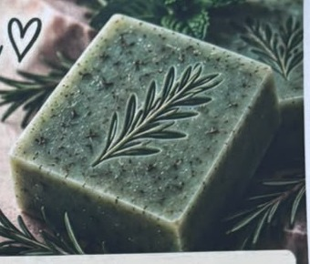
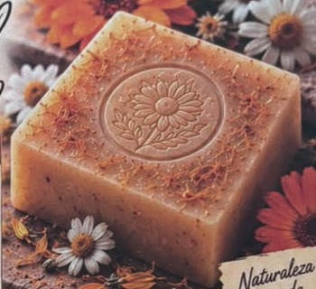
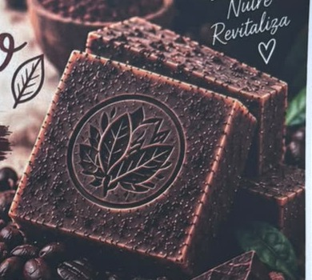
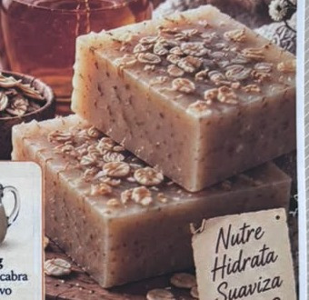
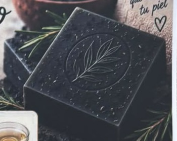

Hierbas
Eucalipto
Respira bienestar en cada baño
- Glicerina transparente y blanca
- Aceite esencial de eucalipto
- Hojas de eucalipto secas
Base de glicerina con flores, hierbas y botánicos · barras de aprox. 100 g
Respira bienestar en cada baño

Energía y frescura para cada día

Frescura que renueva tu energía

Calma, cuida y reconecta tu piel con la naturaleza

Energía natural para tu piel. Exfolia, nutre y revitaliza

Suavidad natural para tu piel. Nutre, hidrata y suaviza

Purifica, equilibra y renueva tu piel de forma natural
Belleza y frescura natural en cada jabón
| Flores | ||
|---|---|---|
| Lavanda | Flores moradas | Suavizante y relajante |
| Caléndula | Pétalos amarillos | Acondicionadora y calmante |
| Manzanilla | Flores amarillas | Suavizante y reconfortante |
| Rosa | Pétalos rosas | Acondicionadora y suavizante |
| Jazmín | Flores blancas | Suavidad y aroma especial |
| Hibisco | Pétalos rojos | Antioxidante y acondicionador |
| Cempasúchil | Pétalos naranjas | Acondicionadora y antioxidante |
| Aciano | Pétalos azules | Suavizante y decorativo |
| Hierbas aromáticas | ||
| Menta | Hojas verdes | Refrescante y tonificante |
| Hierbabuena | Hojas verdes | Aromática y suavizante |
| Romero | Hojas verdes | Antioxidante y acondicionador |
| Eucalipto | Hojas verde gris | Sensación de limpieza |
| Salvia | Hojas gris verdes | Acondicionadora |
| Tomillo | Hojas pequeñas | Antioxidante |
| Albahaca | Hojas verdes | Aromática y antioxidante |
| Laurel | Hojas verdes | Aromática y purificante |
| Botánicos especiales | ||
| Avena | Hojuelas beige | Suavizante y humectante |
| Café molido | Granulado marrón | Exfoliación suave |
| Cáscara de naranja | Trozos naranjas | Aromática y antioxidante |
| Cáscara de limón | Trozos amarillos | Aromática y refrescante |
| Té verde | Hojas verdes | Antioxidante |